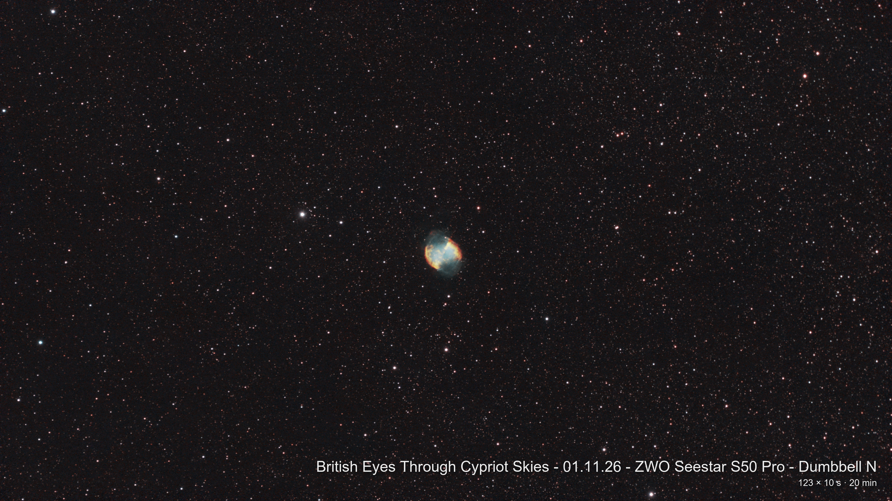
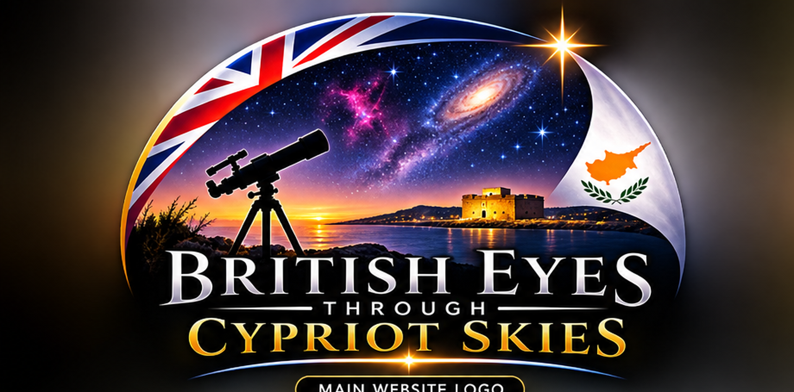

Nebulae . Planetary Nebula
M27 - The Dumbell Nebula
Captured from Cyprus using ZWO Seestar S50 Pro.

Astrophotography · CyprusThe start of a journey of astronomical knowledge through astrophotography via the night sky from Cyprus — distant galaxies, glowing nebulae, star clusters and the wonders of our own Solar System.
Explore my gallery as it develops ↘Each image is a small piece of a much bigger universe. Select a category, then open for a closer look to see images that I have taken under these headings.

Captured from Cyprus using ZWO Seestar S50 Pro.

Billions of stars, gathered across immense distances.

A placeholder for your favourite cluster images.

Planets, the Moon and other nearby wonders.

Space to showcase your processed images.

Your own skies and observing sessions belong here.
Before publishing: the main thumbnails are illustrative space photographs used to show the layout, not my own astrophotography. As the site develops I shall replace them with my own images and captions. Images shown from external photo URLs require an internet connection.
This site is my personal record of exploring the universe from beneath the Cypriot sky. It brings together the images, the equipment, and the learning behind each night spent imaging.
As the collection grows, each photograph will include its target, capture date, exposure details and processing notes together with a brief overview to understand precisely what you are seeing.
A living equipment list — ready to expand as the setup and skills develop.
Compact refractor with field flattener for wide-field deep-sky imaging.
Colour astronomy camera for capturing detailed deep-sky data.
A compact all-in-one telescope for convenient observing and imaging.
Have a question about my astrophotography? I'd love to hear from you.
Contact Me